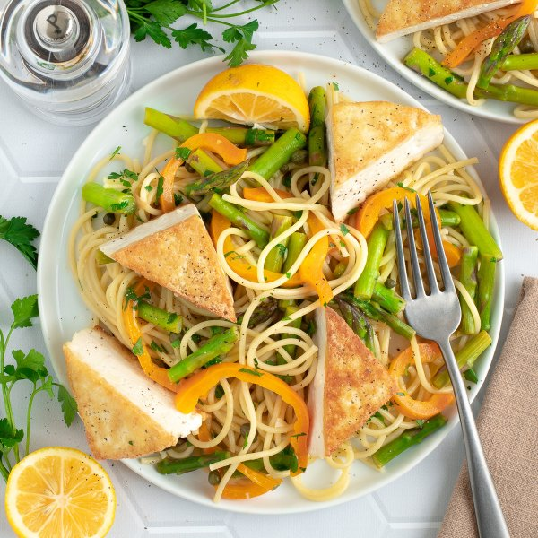

Lemon-Caper Spaghetti with Tofu, Asparagus, Bell Pepper & Parsley

Total Time
35 min
Nutrition (per serving)
620.8 kcalCalories
33.4 gProtein
75.6 gCarbs
23.8 gFat
Full nutrition table
| Calories | 620.8 kcal |
| Total fat | 23.8 g |
| Saturated fat | 3.1 g |
| Trans fat | 0 g |
| Cholesterol | 0 mg |
| Sodium | 70 mg |
| Carbohydrates | 75.6 g |
| Fiber | 7.2 g |
| Sugars | 9.1 g |
| Protein | 33.4 g |
| Potassium | 988.8 mg |
| Calcium | 387.7 mg |
| Iron | 10.1 mg |
| Vitamin A | 1108.4 IU |
| Vitamin C | 147.3 mg |
| Vitamin D | 0 IU |
Cookware
Ingredients
- 2 small bunchesasparagus
- 4 tbspcapers
- 16 fl ozchicken or vegetable broth
- 2 (12 oz) pkgextra firm tofu
- 4 clovesgarlic
- 1 small bunchItalian (flat-leaf) parsley
- 2lemons
- 2orange bell peppers
- 10 ozspaghetti pasta
- all-purpose flour
- black pepper
- extra virgin olive oil
- salt
Steps
- Cut tofu in half along the long side. Sprinkle each tofu plank with salt on both sides and sandwich between clean towels or paper towels; place on a baking sheet pan. Place a cutting board with something heavy on top and set aside to press out excess water.2 (12 oz) pkg extra firm tofu
1 tsp salt - Fill a large pot halfway with hot water (from the tap), cover, and bring to a boil. Uncover, add salt and pasta, and stir for a few seconds. Cook until desired firmness, 8-10 minutes; drain and set aside.1 tsp salt
10 oz spaghetti pasta - Meanwhile, wash and dry the fresh produce.2 small bunches asparagus
2 orange bell peppers
2 lemons
1 small bunch Italian (flat-leaf) parsley - Snap or cut off the woody ends of the asparagus; cut crosswise into 1-inch pieces and place in a medium bowl.
- Trim, seed, and slice bell peppers into thin strips; add to the bowl with the asparagus and set aside.
- Cut the tofu planks in half, then cut each half into 2 triangles; place in another medium bowl. Sprinkle with flour and pepper on both sides.4 tsp all-purpose flour
½ tsp black pepper - Preheat a large skillet over medium-high heat.
- Once the skillet is hot, add oil and swirl to coat the bottom; add tofu and cook until golden, 2-3 minutes per side. Remove to a plate and loosely cover with aluminum foil. (Reserve skillet for later use.)2 tbsp extra virgin olive oil
- Meanwhile, peel and mince garlic.4 cloves garlic
- When the tofu is done, return the skillet to medium heat; add more oil and swirl to coat the bottom. Add garlic and additional flour; cook, stirring constantly, until fragrant, about 30 seconds.4 tsp extra virgin olive oil
2 tbsp all-purpose flour - Zest and juice one lemon into the skillet; add broth, capers, salt, and pepper. Cook, stirring often, until the sauce has thickened, 2-3 minutes. (Reserve remaining lemon for the next step.)16 fl oz (2 cups) chicken or vegetable broth
4 tbsp capers
½ tsp salt
¼ tsp black pepper - While the sauce is cooking, cut the remaining lemon into wedges and set aside for serving.
- Add asparagus and bell pepper to the skillet with the sauce; cook, stirring occasionally, until veggies are fork-tender, about 4 minutes.
- Meanwhile, shave parsley leaves off the stems; discard stems and mince the leaves.
- When the veggies are done, add drained pasta and parsley to the skillet; toss to combine and continue to cook until heated through, 1-2 minutes more.
- To serve, divide pasta, veggies, sauce, and tofu between plates or bowls. Squeeze lemon over top and enjoy!